About
I'm a Product Designer (UX/UI) with over five years of experience building user-centered digital products, and a background in fine arts that shapes how I approach visual and interaction design.
Before design, I worked as a systems developer — writing PHP, JavaScript, and SQL for a library-management platform used in thousands of libraries worldwide. That background didn't disappear when I moved into design; it's what lets me hand off cleanly to engineers, reason about what's actually feasible to build, and — increasingly — build parts of it myself.
This portfolio is a case in point: every page is hand-coded HTML, CSS, and JavaScript, no page builder or framework involved. I've been leaning further into that direction lately, exploring AI-assisted coding tools to give myself more autonomy in bringing my own designs to life, end to end.
I'm currently based in Antwerp, Belgium, and recently completed a second bachelor's degree in Fine Arts (Painting) alongside freelance design work. I'm open to full-time or part-time opportunities, remote or local.
Experience
The three roles below are the ones most relevant to product and design-engineering work — each has a full case study elsewhere on this site.
10 months
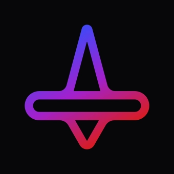
Worked with Plots' design team to build a cohesive, scalable design system from the ground up — reusable Figma components, refined flows, and visual guidelines for long-term consistency.
View the Plots case study →2 years 7 months
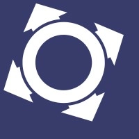
Redesigned Omnitrack's website with a lighter, more intuitive interface, and helped manage the technology team through implementation — reviewing interactive Figma prototypes and tracking development in Trello. Worked on-site in the UK and Italy before continuing remotely.
3 years, part-time
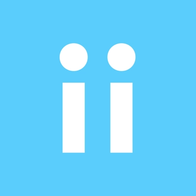
Joined a personal-safety startup at conception and built its interface and design system from scratch. Worked closely with engineers day to day — writing tickets in Jira, picking up agile practices — and grew the app to around 4K weekly active users through iterative user research.
View the Civi case study →Technical roots
Before design, I worked as a developer — the background behind how I collaborate with engineering teams today.
1 year 4 months
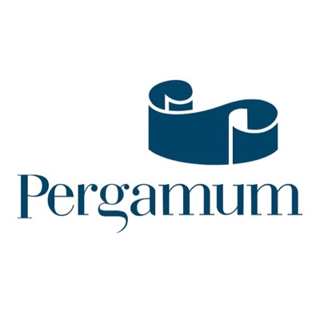
Supported and helped develop the mobile version of Pergamum, a library-management system used in over 400 institutions and roughly 8,000 libraries in Brazil.
1 year 7 months
PHP, AJAX, and SQL/Oracle development; JavaScript and jQuery for front-end interactivity.
Also
Alongside the roles above, I've done graphic, motion, and product design work across a range of freelance and agency projects:
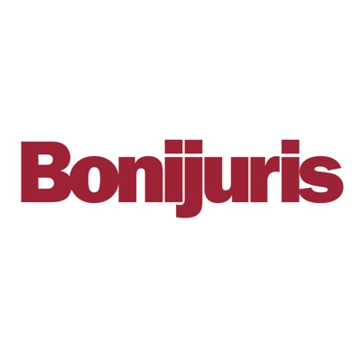
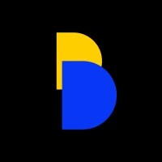
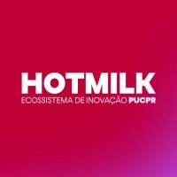
Skills & tools
Product design
Figma, UX research, design systems, prototyping, wireframing
Visual & motion
Illustrator, Photoshop, InDesign, Lightroom, After Effects
Development
HTML, CSS, JavaScript, PHP, SQL, Claude Code
Collaboration
Jira, Trello, Miro, agile workflows
Education & certifications
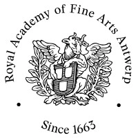
Bachelor of Fine Arts, Painting — Royal Academy of Fine Arts Antwerp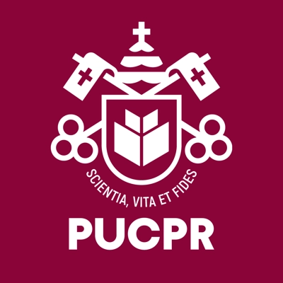
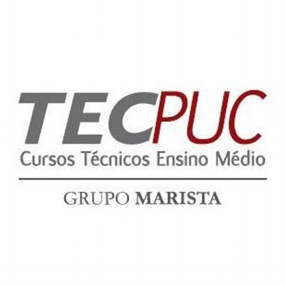
Computer Technician — TECPUC, integrated IT technical course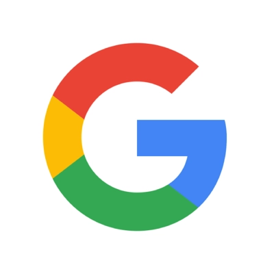
UX Design Certificate (3 courses) — Google: Foundations of UX Design, Start the UX Design Process, Build Wireframes and Low-Fidelity PrototypesGet in touch
I'm always happy to talk about design, product, or new opportunities — reach out at giovana.tows@gmail.com or on LinkedIn.